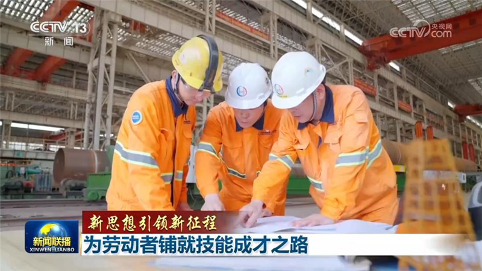
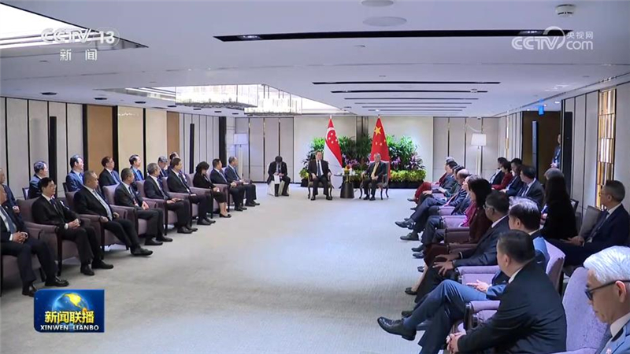
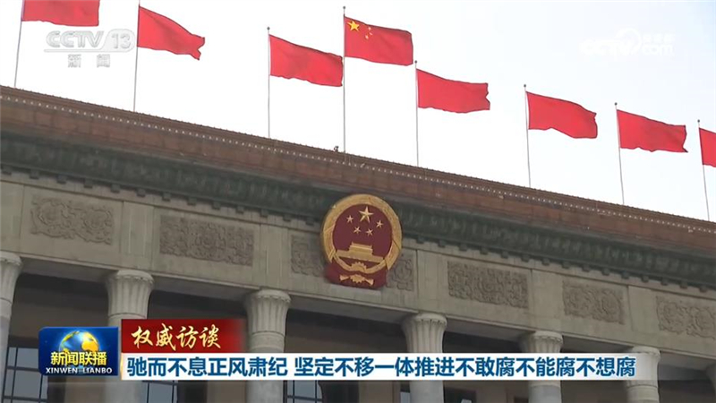
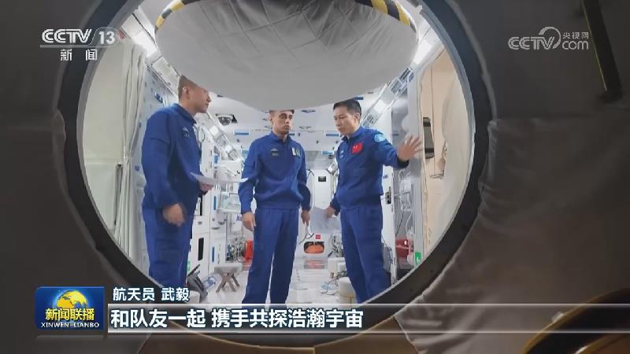
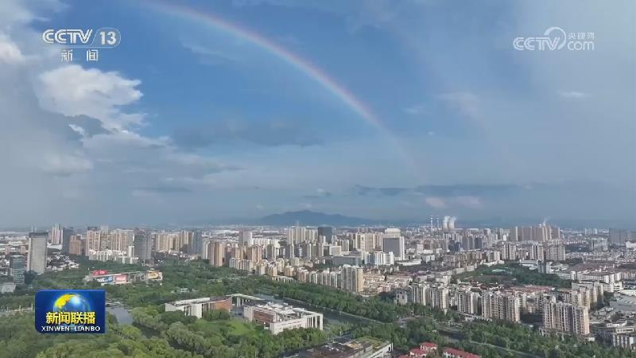
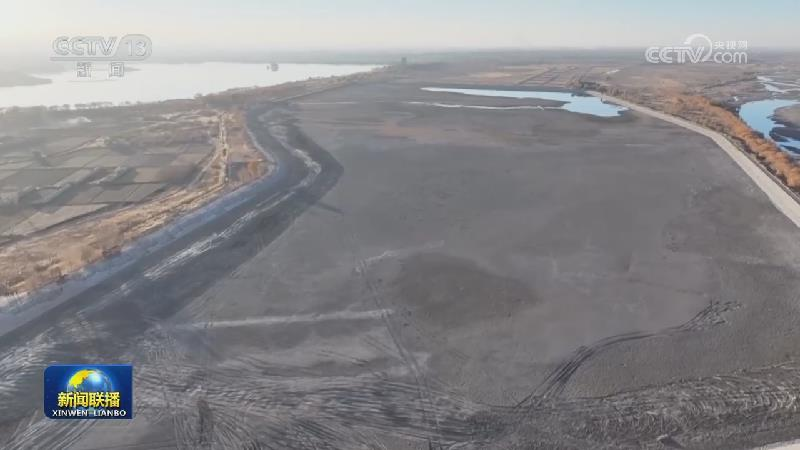
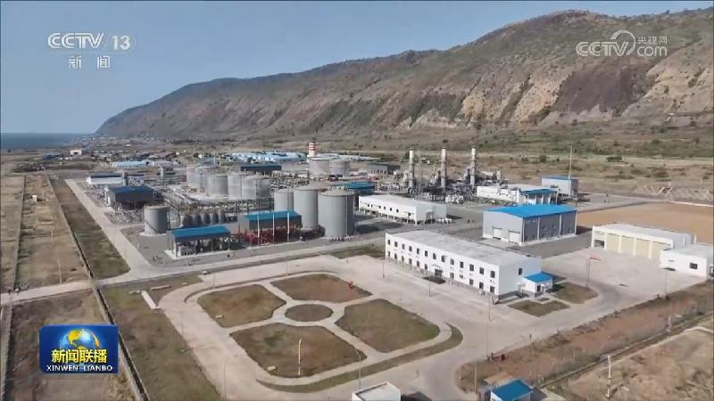
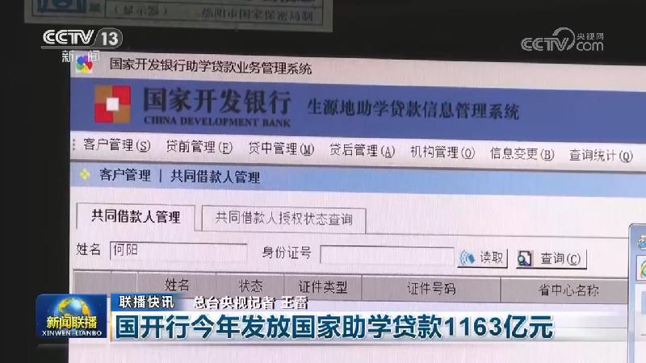
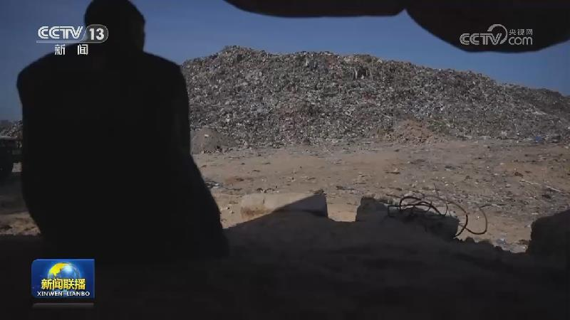
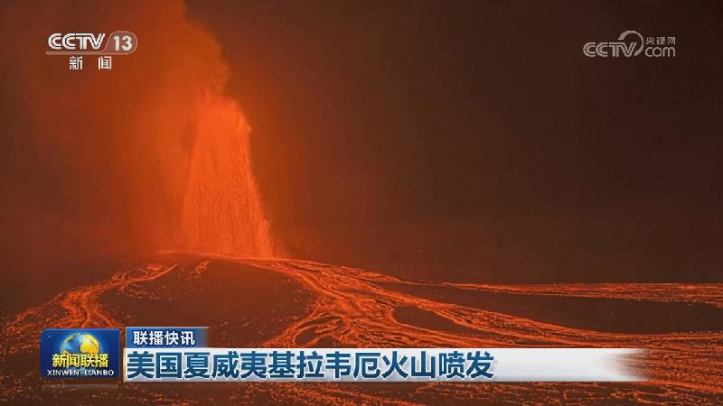

01
习近平向“声援巴勒斯坦人民国际日”纪念大会致贺电
11月23日，联合国举行“声援巴勒斯坦人民国际日”纪念大会，国家主席习近平向大会致贺电。

11月23日，联合国举行“声援巴勒斯坦人民国际日”纪念大会，国家主席习近平向大会致贺电。

习近平总书记指出，加快建设一支知识型、技能型、创新型产业工人大军，培养造就更多大国工匠和高技能人才。

11月22日至23日，中共中央政治局常委、国务院副总理丁薛祥应邀访问新加坡，分别会见新加坡总理黄循财、国务资政李显龙、副总理颜金勇，并同颜金勇共同主持中新双边合作联委会第二十二次会议以及中新苏州工业园区、中新天津生态城和中新（重庆）战略性互联互通示范项目等机制会议。

党的二十届五中全会审议通过的《决定》，强调要驰而不息正风肃纪，坚定不移一体推进不敢腐不能腐不想腐，坚定走好中国特色反腐败之路。如何走好这条反腐败之路？来看今天（11月24日）的《权威访谈》。

今天（11月24日），神舟二十四号载人飞行任务新闻发布会、航天员乘组媒体见面会在酒泉卫星发射中心举行，神舟二十四号载人飞船发射窗口确定于11月25日8时18分发射，这将是中国载人航天工程史上首次中外航天员联合飞行，也是中国空间站首次迎来外籍航天员。

国家能源局发布数据显示，前10个月，全社会用电量保持平稳增长，高端制造业、互联网数据服务业等用电量增长较快。

眼下，冬修水利正值黄金期，农田水利设施加速建设。在安徽，作为引江济淮二期核心输水干线之一的淮水北调扩大延伸线工程——濠城站、宿东站等控制性节点开足马力，持续推进土建和设备安装；部分输水管道同步调试。预计明年全面完工后，数百万皖北缺水区域群众就能喝上优质的淮河水。

记者从商务部了解到，“十五五”时期，我国将持续深化“一带一路”经贸合作。在推动贸易创新发展方面，将深化与共建国家绿色贸易、跨境电商等合作，推动新兴产业外贸产品进出口，扩大自共建国家优质商品进口，更好促进共建国家产业发展。

《社会保险基金监督条例》向社会公开征求意见

联合国23日举行“声援巴勒斯坦人民国际日”纪念大会。联合国常务副秘书长阿明娜·穆罕默德发表讲话说，尽管有巴以停火协议，但在加沙地带，致命的暴力始终未停，民众长期流离失所。在其他被占领的巴勒斯坦地区，非法的以色列定居点扩张，威胁着“两国方案”。国际社会必须将声援转化为实际行动，结束巴勒斯坦人民的苦难。她强调，“两国方案”是唯一可行的出路，联合国对巴勒斯坦人民的承诺绝不动摇。……
利比亚23日谴责乌克兰袭击利比亚东部城市班加西港口及附近海域船只，要求追究相关方责任。利比亚总统委员会主席曼菲表示，此次袭击威胁利比亚的主权与稳定，也危及地中海地区的安全、海上贸易航线以及能源供应。利比亚将根据国际法和《联合国宪章》，对这一事件展开调查。利比亚民族统一政府外交部和利比亚军队总参谋部也对袭击表示谴责。

世粮署警告地缘和气候问题威胁粮食援助